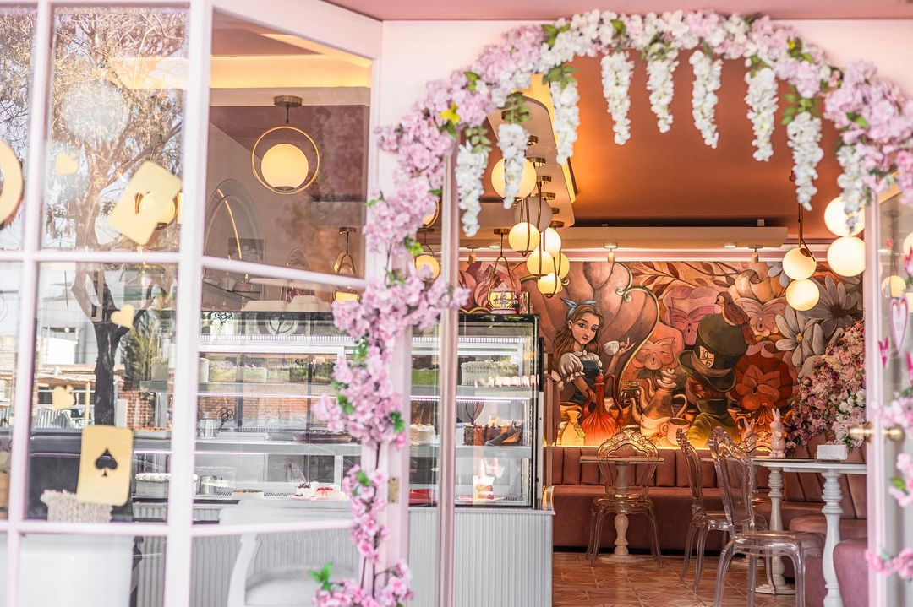
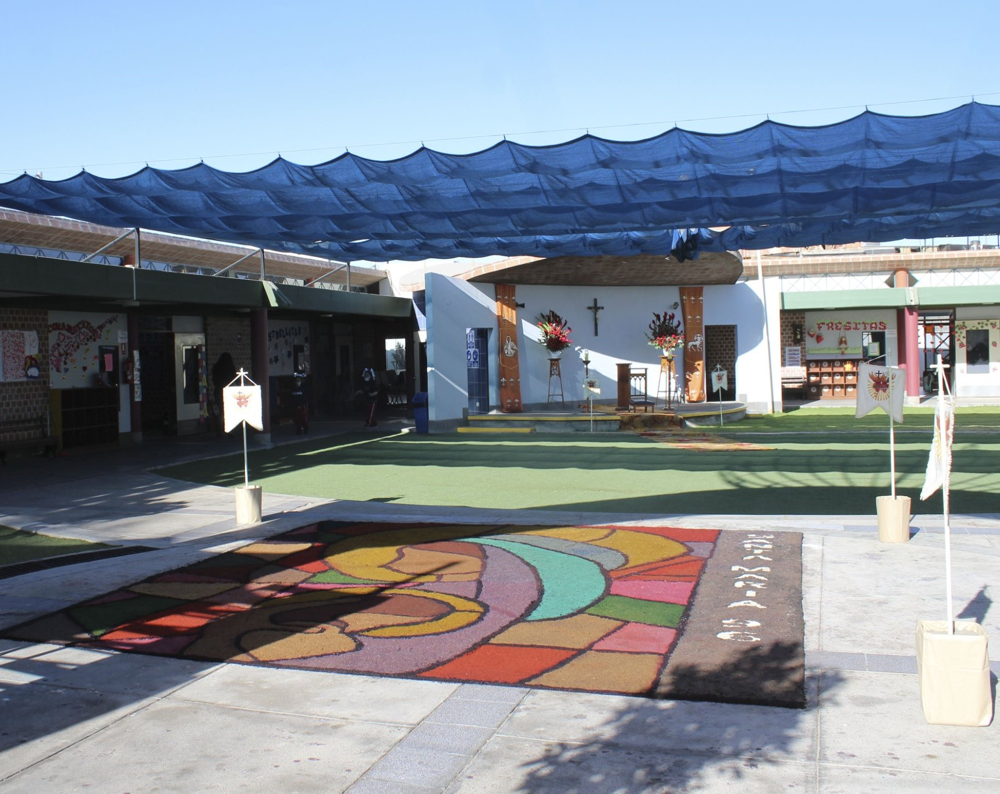
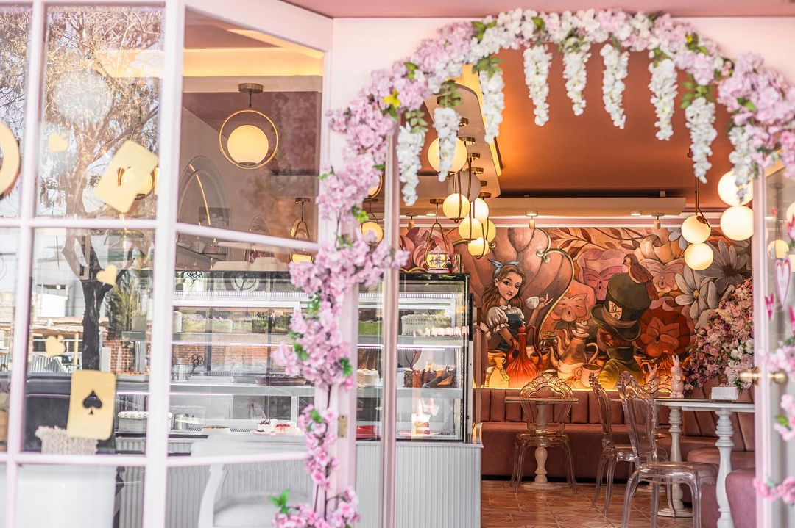
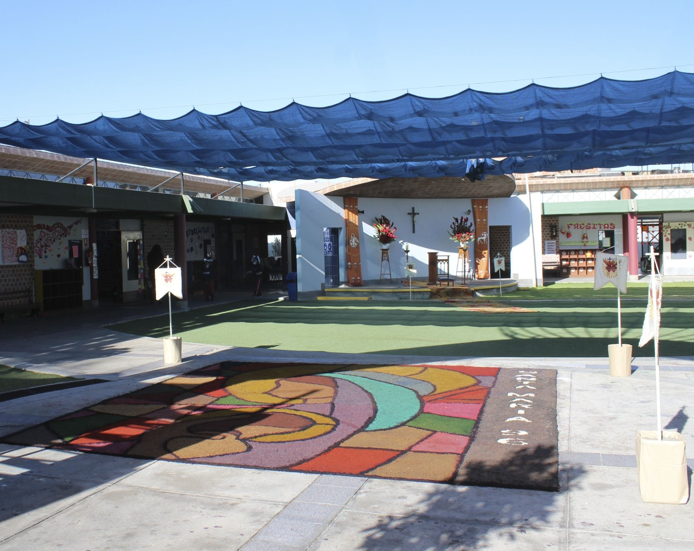

Eventos Culturales
He participado en varios festivales y conciertos, lo cual ha sido fundamental para mi desarrollo personal y profesional como cellista.
También tuve la oportunidad de tocar cello en el Conservatorio de Buenos Aires en Argentina
y en el Conservatorio de Costa Rica, experiencias que enriquecieron mi formación artística y musical.
Proyectos de Programación
He colaborado en varios proyectos de programación, incluyendo el desarrollo de sitios web y pequeñas aplicaciones.
Estos proyectos me han ayudado a aplicar mis conocimientos de ciencias de la computación en contextos prácticos.
Trabajé como host en El Té de Alicia, una pastelería temática en Arequipa.
Esta experiencia me permitió desarrollar habilidades en atención al cliente, organización y trabajo en equipo, todo en un entorno creativo y único.
Formación Académica
Actualmente curso la carrera de Ciencia de la Computación en la Universidad Católica San Pablo,
donde desarrollo habilidades técnicas avanzadas en áreas como programación, algoritmos, análisis de datos y diseño de software.
Esta formación me permite abordar desafíos complejos y crear soluciones tecnológicas innovadoras.
Puedes consultar la malla curricular de mi carrera haciendo clic en el siguiente enlace:
Malla Curricular de Ciencia de la Computación.

 


